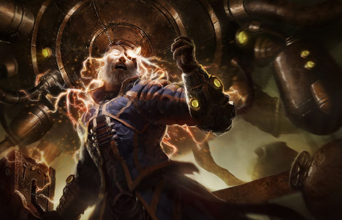
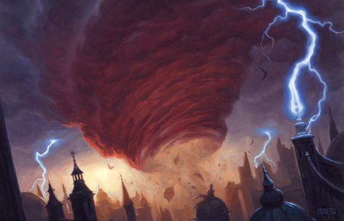
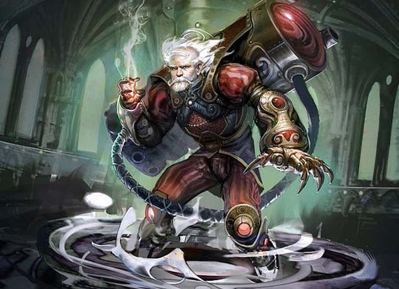
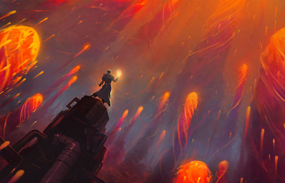
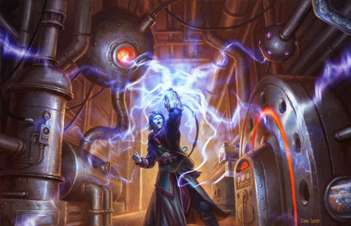

早期译作，水平有限，请轻喷。
作者：Jenna Helland
译者：我
原文地址：https://magic.wizards.com/en/articles/archive/uncharted-realms/epic-experiment-2012-09-10

特伦茨扶了扶他的内延式护目镜，好让它安分地待在鹰钩鼻的鼻梁上。早安，实验日！超视尘的烟气弥漫在空气中一闪一闪，他狠狠地吸了一大口。磁能硝化仪——他的法术力充能装置——堆满了整面东墙，它正飘散着金属闷燃的气味。特伦茨爱死这味道了。
清晨的阳光透过布满裂痕的窗玻璃照进了房间，窗外则是特伦茨亲昵地称作空杯街的废弃街区。他朝窗外一群虔诚的瑟雷尼亚传教士挥手致意；几个月以来，他们一直在清理这片瓦砾——用双手。按照这一速率下去，在102.7年之内，他们就能清整出一片不错的地方，好给他们新生的社群种下一棵新的公会之树。
特伦茨测量了他通风良好的工作坊，感觉自己愉快得快要爆炸了。在几英里外的第十区，炎灵应该正蜷在他位于尼米斯的巢穴里，同时考虑着千万件事情。尼米捷只需要在一念间就能思索无数问题，而我就算能把握住其中的一丁点也好啊。特伦茨这么希望着。
尼米捷将这块城市中的偏远地区授予特伦茨，作为他的特别实验的场地。在特伦茨成为一名能够独当一面的化学师之前，他就得到了尼米捷的特别关注，因为他创建出了一条从尼米斯直通阳园大门的乙太隧道。最近，炎灵又私下向特伦茨委派了任务，让他投入了自己根本不可能独自想到的研究方向。特伦茨已经记不得他上一次睡觉是在什么时候了，因为很快就会有大事发生了！要做的工作太多，实在没有时间闭上眼睛。
而今天就是实验日了！特伦茨将会揭开真理的面纱，并将它呈入他的主人爪中。特伦茨绑好了他的头灯，将脸上的电子目镜往低调了调。他环顾房间，惊叹于这不可思议的细节。在穹顶天花板上，有一个泥瓦匠忘记拭去的指纹；他皮实的靴子脚趾上溅上了一点昨天的血污。特伦茨喜欢这些微小的细节。一切都显得那么盛大。
不冒着风险的实验能得到什么结果？什么都得不到。爆炸？爆炸就是用火焰绘就的智慧艺术！
他大步跨过翘起来的地板，站在他自己设计的这套元素交互系统，磁能硝化仪旁。多么小，多么精致。如果它是只宠物老鼠的话，他就要亲一口它毛茸茸的小耳朵了。特伦茨高兴地感叹。如果这叫做思考，那我不知道我以前那叫做什么，他开心地想。
属于他的传奇时刻已经来临。特伦茨已经将实验范围缩小到了四个测试，每一个都充溢着潜力，每一个都有可能带来无价的知识珍宝，呈贡到炎灵的巢穴中。但是，这其中只有一个是正确的选择。是哪一个呢？要明智地选择啊，特伦茨先生！
做出你的选择：
大气平衡干扰腔室

特伦茨选择了大气平衡干扰腔室。他启动了米捷线圈，跨入了腔室喷出的火雾场中。燃烧的雾气围着他涡旋，像针刺一样灼烧着他的脸。地板在他的脚下震颤着。在窗外，天色昏暗了下来，狂风怒号。一股龙卷风显现在他工作坊的窗外，瑟雷尼亚传教士们惊恐地逃进了阴沟里。
暴风横扫过废弃的街区，夷平了几栋高层公寓，推倒了一座空荡荡的欧佐夫传教所。古鲁垦荒者们多年来积聚的垃圾被吹向空中旋转飞舞，原本栖息在瓦砾中的鼠群急忙钻向下水道。但很快，风暴平息了，就像它来的时候一样快。太阳又露了出来。
特伦茨失望地环视工作坊。他所想要的并不是一场雷电充能的龙卷风暴。奇怪的是，瑟雷尼亚人在他的窗外大叫着：风暴横扫过的街区被清理得干干净净，就好像有个巨人大发慈悲地拿着扫帚扫过一样。“播种！播种！”他们的欢呼声在空气中回响，而特伦茨已经转身回到了他的绘图板前。
空间外层分形分析仪

特伦茨选择了空间外层分形分析仪。他小心翼翼将最纯净的超视尘倒进螺栓孔中。超视尘开始隐隐发光，不知怎么地，特伦茨抽了抽鼻子。密封小瓶中的超视尘开始震动，然后结块，然后再次震动。特伦茨打了个喷嚏，然后世界在他面前裂解成了钴蓝色和深褐色的美丽断片。啊哦，特伦茨想道。超视尘加多了。
与此同时，在地下深处的幽暗地域中，两道黑影正在热烈的谈论着。突然，一束深褐色的光芒扫过两人，他们急忙退入阴影中。光芒散去，一个白头发的家伙莫名其妙地出现了，他在鹅卵石铺就的地面上使劲跺着脚，大声咒骂着什么，然后便又不见了。两人面面相觑——在那家伙消失的地方，一道美丽的传送门就敞开在两人面前，而塔兹先生完全确信，这道传送门可以将他们带到他们梦寐以求的地方。
“呃，克仑可，”塔兹弱弱地对站在他边上的钩鼻子鬼怪说，“进到欧佐夫内部圣殿去的法子，好像没有你一开始想的那么麻烦嘛。”
高温地质测绘仪

特伦茨选择了高温地质测绘仪。他用测绘仪敲了敲过载的米捷线圈，同时扭过头不去看它。什么事都没有发生。他吹走了上面的灰尘团，更用力地敲了敲。
霎时，炽热的火束直蹿云霄。白热的金属碎片雨点般落向整个街区，在几英里范围内的屋顶上砸出无数硬币大小的破洞。接着，金属燃烧的嘶嘶声被大地震动的隆隆声取代了；一场低烈度的地震袭来，街道像海浪一样起伏着。
光亮和响动吸引了拉铎司教众的注意力。没有什么比一场广泛、随意的破坏更能称作“庆典”的了。血祭师从锐兹玛第蜂拥而出，全城的欢愉俱乐部都空空如也。杂工和钉刺手将他们不情不愿的邻居们从睡梦中弄醒，很快整条街就被欢庆的人们占领了。
在庆典过程中，几百个教众一致通过，他们应该每年都来一次这样的庆典。就这样，“火雨、放血与暴乱之邻居感谢日”这一新的节庆诞生了。
夜已经深了，庆典还在继续——此时特伦茨早已将测绘仪丢出窗子，上床睡觉了。
神经多线程系统

特伦茨选择了神经多线程系统。他紧了紧两鬓旁的螺钉，期盼地等待着。一声刺耳的噪音响了起来，紧接着是一个惊恐的吱响声。空气冲进了他的耳朵，他感到他的脑袋像个抽气泵一样隆隆作响，一柄重锤正将他的思绪打击得四分五裂。“不！”他大喊，“我绝不能让炎灵失望！”他拼命地将桥接护腕高高举起。就在此时，奇迹发生了：顷刻间，房间中便被闪电与纯粹无暇的才华所充溢。特伦茨做出了正确的选择，而这选择的回报已被握在了他充盈着电能的掌中！